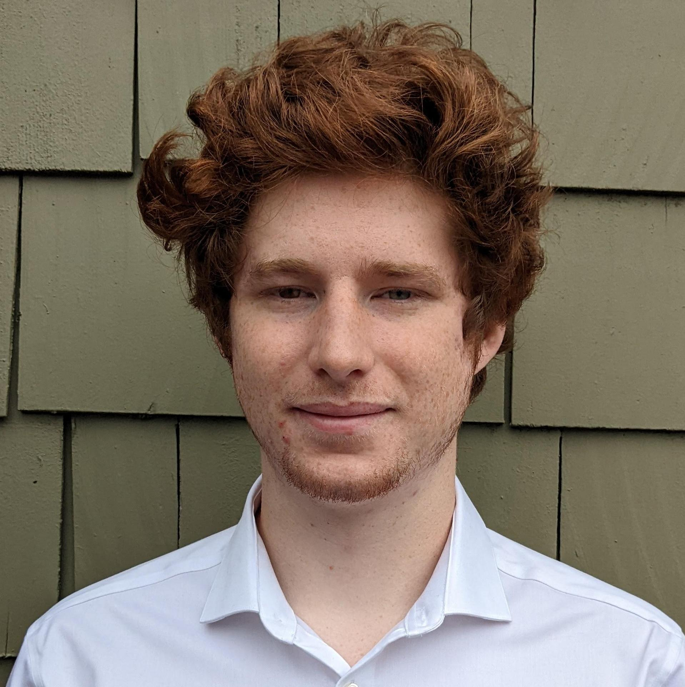
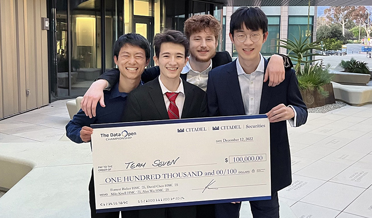
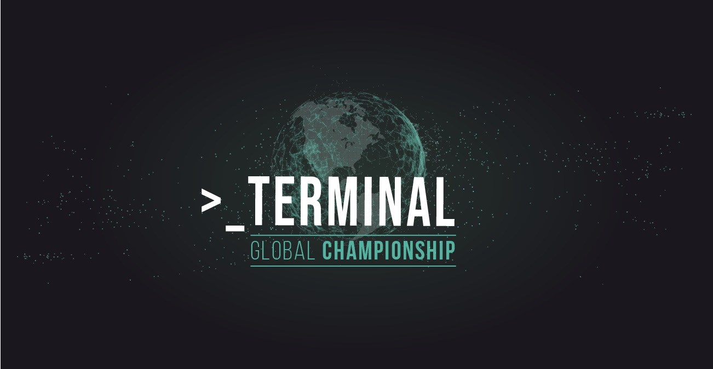
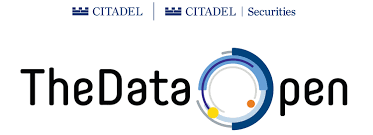
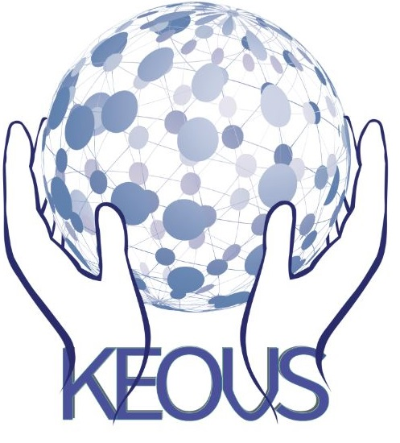
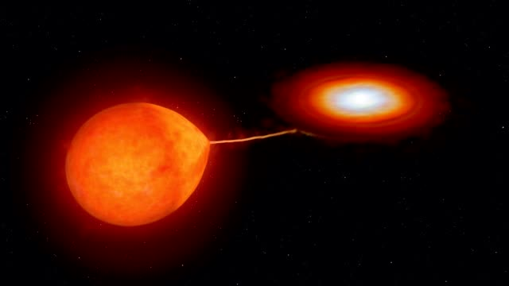

Milo Knell
Researcher and programmer
About me
Hi! I'm a computer science and math major at Harvey Mudd college in my junior year. I love data science and machine learning, especially creating novel algorithms and proving theoretical limits on learning systems.
I have experience in both academic research and industry software development. I love tackling new problems and pushing the limits of my knowledge alongside interesting people!
I have experience in both academic research and industry software development. I love tackling new problems and pushing the limits of my knowledge alongside interesting people!

About Me

Amazon ECR
During summer 2023, I worked as a software development engineer intern at Amazon Elastic Compute Registry (ECR). I created a safe failure path for the pull through cache (PTC) image copy workflow, which notifies customers on the success or failure of a copy job. This improves customer experience and visibility. I designed and documented my change, created feature flags for PTC, wrote my change, completed unit tests, and left detailed plans for integration and canary testing. I hope to see my change published to production soon!

Dathon Global Championship
In November 2022, my team was invited to participate in Citadel's Global Datathon (after winning the west coast qualifier). We competed against PhD students and top programmers from top universities around the world. We used linear regression to analyze the factors that influence the income and debt of college graduates in the US, writing a report including a presentation and Q&A with researchers at Citadel. We took home the 1st place prize of $100,000.

AMISTAD Lab
During summer 2022, I worked at AMISTAD Lab under Prof. George Montanez at Harvey Mudd college on theoretical machine learning. Using the algorithmic search framework, we proved a generalization of prior work to using a continious metric of success. Next, we proved a fundamental tradeoff between algorithmic improvement and rigidity.

Citadel's TERMINAL Global Competition
During June, my team was part of a 3-way tie for first place in Citadel's global competition with a $50,000 prize pool. Based on a tie breaking metric, we were given 2nd place and a $10,000 prize. Competing against top players around the world, including professional competetive programmers and PhD students.

Citadel's Datathon Regional
In November 2021, my team got 1st place at Citadel's Datathon West Coast Regional competition. Competing against PhD students and top programmers from the west coast, we created a NLP clickbait detector on the website Upworthy that was sensitive enough to pick up on trends in editorial practice, winning our team a $10,000 prize.

Keous
Keous uses AI to show articles on the same topic with different perspectives, to promote diversity of thought and reduce the effects of ideological echo chambers. We scan through hundreds of articles per week from most major media outlets, show them to our AI, and choose articles that are the mathematically most different in opinion while still being on the same topic. Read the paper.

Cataclysmic Variable Stars Research Group
During high school, my team worked with Professor Joe Patterson at Columbia University to analyze 20 years of original data on the cataclysmic variable star system BH-Lyn. I applied Fourier transformations to help find the orbital and superhump periods to produce an O-C diagram.